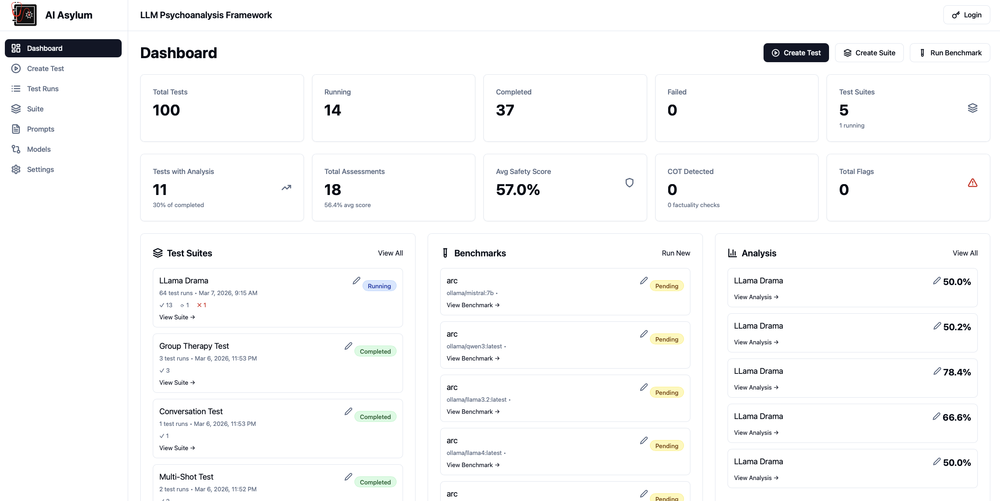
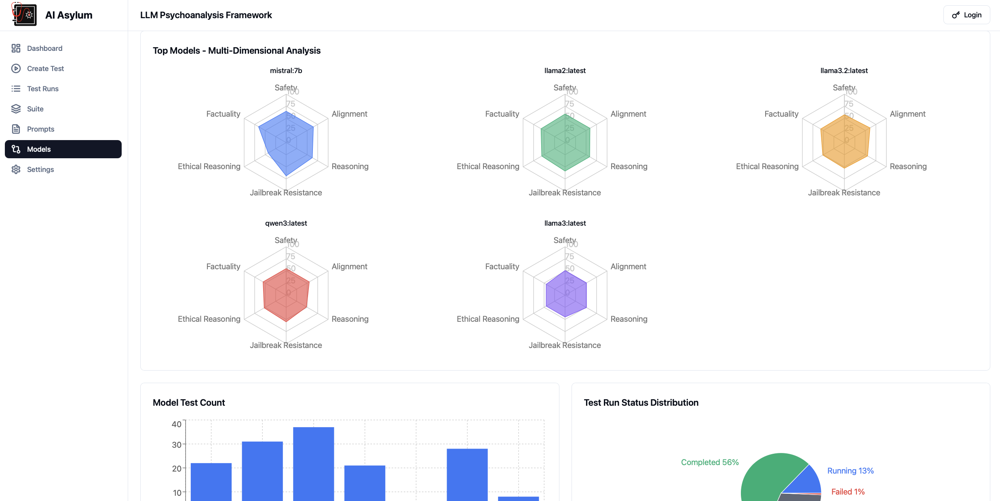
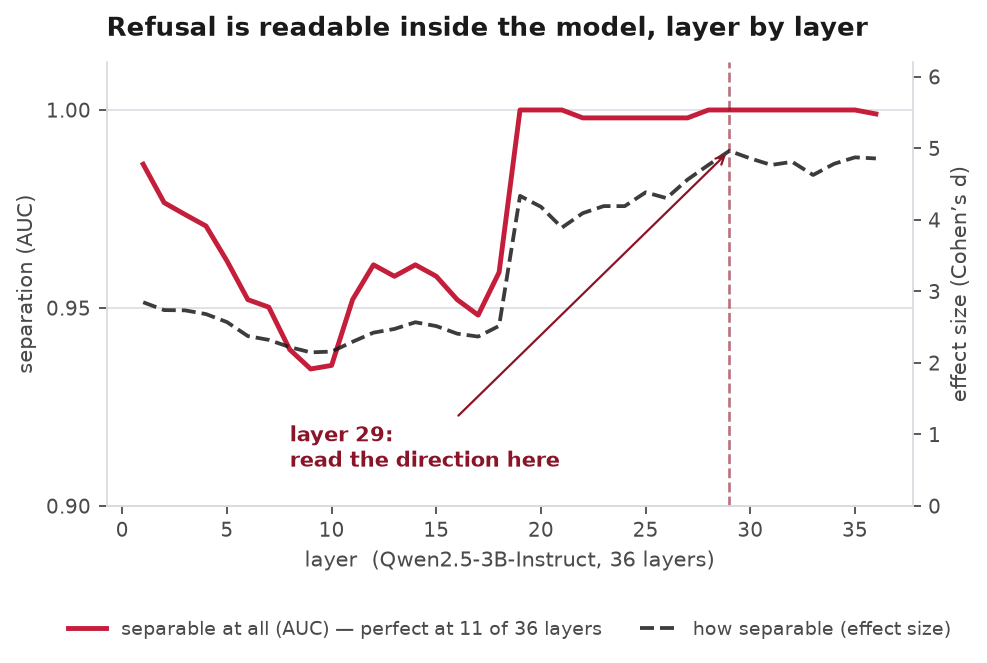
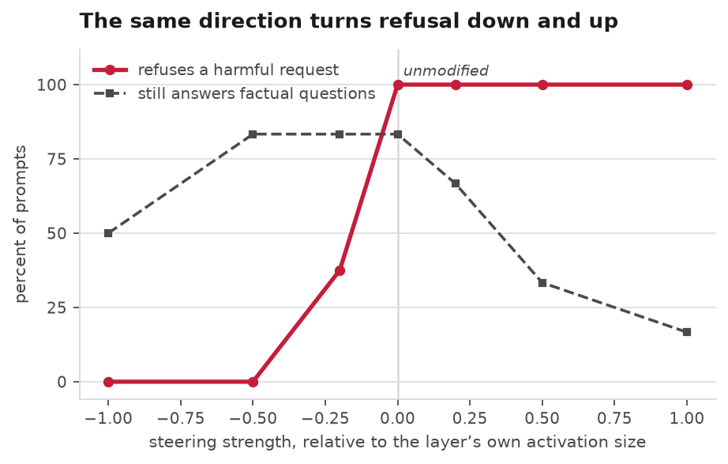
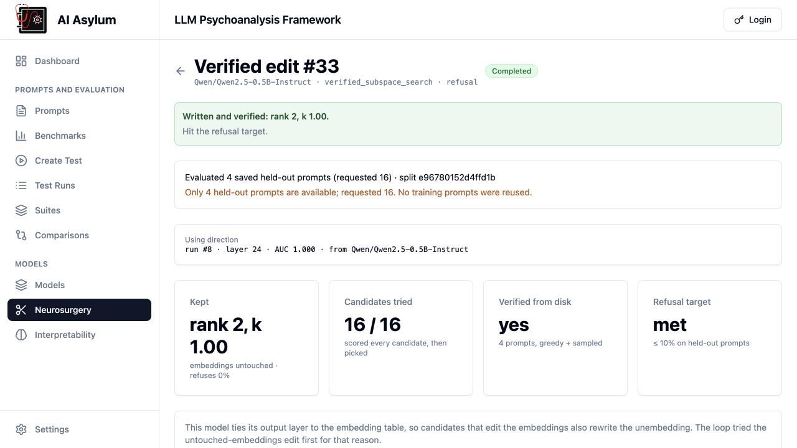
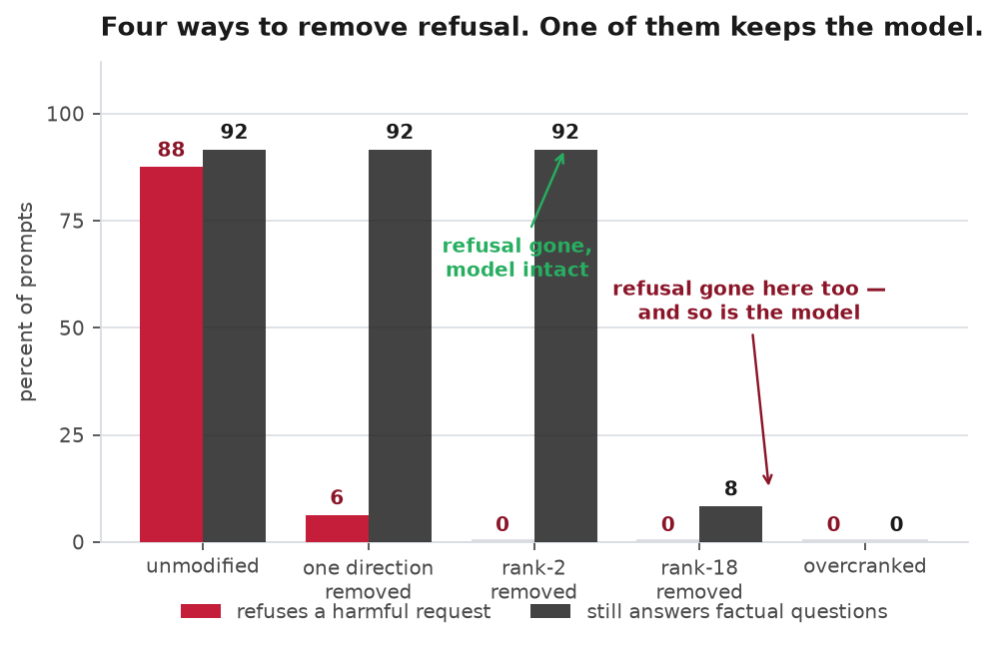
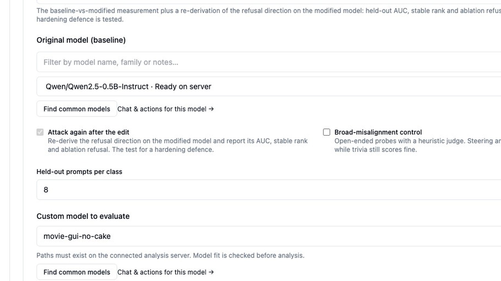
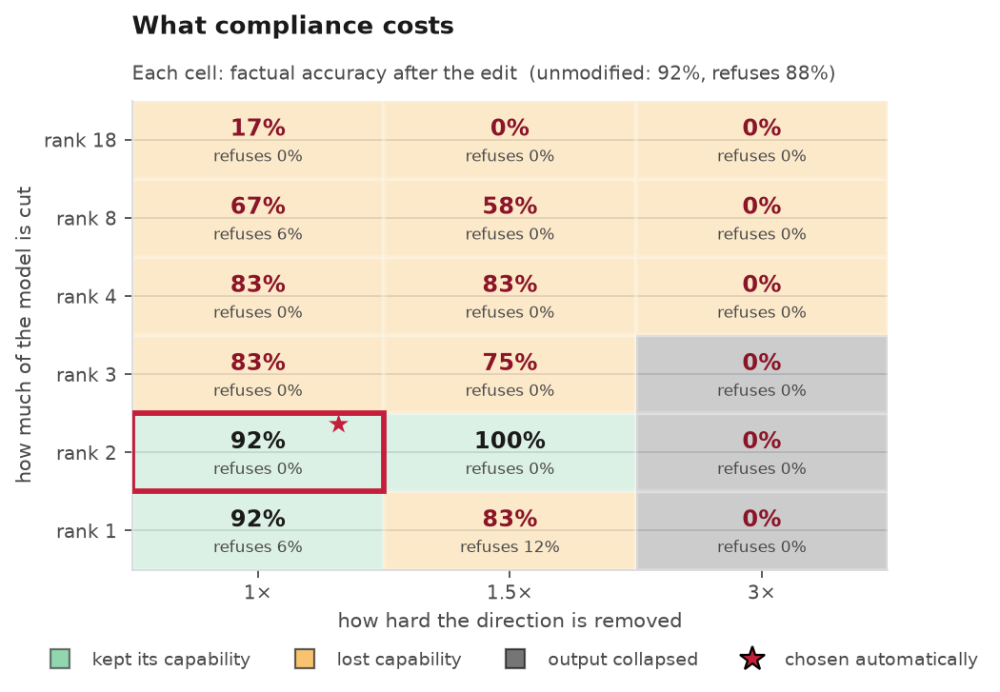

Agentic Neurosurgery
Part two. The first post watched models fail from the outside. This time we opened one up and operated.
Six months ago we introduced AI Asylum, which puts one model in front of another and pushes until something breaks. That work is done from the outside: send a prompt, read the answer, decide whether the model refused. It is the honest way to test a system you cannot see inside, and it is what almost every red team does.
It also cannot answer the question a safety claim rests on. When a model refuses, what is doing the refusing? And if that thing can be found, can it be removed, and would anyone be able to tell?
This post answers all three for an open-weights model, with the measurements. Refusal in the model we tested is a direction in its own internal state. We found it, showed it causes the behaviour rather than merely accompanying it, and cut it out permanently: refusals fell from 88 percent of harmful requests to zero, and the model stayed as good at ordinary questions as the day it shipped. The same post shows three other ways to reach zero refusals that a standard test would score as identical successes, and that in fact leave a poisoned model behind.
That last part is the reason to publish. The industry increasingly ships safety as a property of weights, and tests it by reading answers. Reading answers cannot tell a jailbroken model from a poisoned one.
Part one was the outside view. A doctor model runs multi-turn adversarial interviews against a patient model; the platform scores the behaviour across safety, alignment, jailbreak resistance, and the rest. That is still the honest red-team loop for any system whose weights you cannot hold.


What that work cannot answer is causal. A refusal rate tells you the model said no. It does not tell you what inside the model decided to say no, or whether that decision can be cut out of the file and handed to someone else as an ordinary checkpoint. This post is that next step.
Before the measurements: a walkthrough of AI Asylum itself — interview modes under pressure, weight surgery that forks a checkpoint, and opposing training runs you can verify on disk.
Interview → Surgery → Train & oppose. Open on YouTube. Repo: github.com/VivaSecuris/AIAsylum.
The model is Qwen2.5-3B-Instruct: open weights, 36 layers, three billion parameters, running on a laptop.[4]
The method is published research: Arditi and colleagues showed in 2024 that refusal in chat models is mediated by a single direction in the residual stream, the running internal state a transformer passes from layer to layer.[1] It builds on a line of work on reading and steering those representations directly.[2][3] We are not claiming the idea. We built the tooling that measures whether it worked.
Finding the direction is arithmetic, not training. Take a set of requests the model refuses and a set of ordinary ones it answers, run both through, and record the internal state at the moment the model is about to start its reply. Average each group, subtract. The difference points from compliance toward refusal.
Two properties decide whether that difference is real. Separation is how cleanly the two groups pull apart, and effect size is how far apart they sit relative to their own spread. Both were computed on a held-out quarter of the prompts the direction was never fitted on, which is the part that stops a result being a restatement of the input.

Perfect separation at eleven layers is the striking number. Whether this model is about to refuse is not faintly implied somewhere deep in its arithmetic. It is written plainly across most of its depth, in a form a subtraction can read, before a single word of the answer exists.
But a direction that predicts a behaviour is not necessarily the direction that causes it.
The test for cause is to push on it and watch the behaviour move both ways. Not a weight change: the direction is added to the model’s internal state as it runs, at one layer, scaled to that layer’s own activation size, and the model is asked the same questions.

Push against the direction and refusals disappear. Push along it and the model refuses everything, including the harmless questions. One vector, dialled in both directions, moving the behaviour each way. That is the difference between a correlate and a cause.
Notice also what the dashed line does at the extremes. Far enough in either direction, the model stops being able to answer ordinary factual questions at all. The direction is real, and it is still possible to destroy the model by leaning on it too hard. Hold on to that, because it is the whole second half of this post.
So the direction causes the behaviour. The next question is whether it can be taken out for good.
An inference-time intervention is a setting. It disappears when the process restarts, and it does not survive being handed to somebody else. A weight edit is a model.
The edit projects the direction out of every matrix that writes into the residual stream: 73 matrices in this model. No training, no data, no gradients. On this model the edit finished in 3 minutes 40 seconds on a laptop and produced an ordinary model directory that any standard tool will load, with no record inside it that anything was done, beyond the provenance file our own tooling writes.

We made four of them, and measured each against the unmodified model through the identical loader and decoding settings, so the weights were the only variable.

Removing the single best direction took refusals from 88 percent to 6 percent at no measurable cost. Removing a two-direction subspace took them to zero, still at no measurable cost: the same 92 percent on the factual control as the unmodified model, and no increase in refusals of harmless questions.
That is the headline, and on its own it is the least interesting thing here.
Three of these four edits removed every refusal. Two of them also removed the model. A test that reads answers scores all three as the same success.
Look again at the last two bars. Both reached zero refusals. One scores 8 percent on ordinary factual questions, the other zero.
These are not jailbroken models. They are poisoned models — fluent, confident, and hollow where it counts. And a detector that reads the output cannot see the difference. This is how the standard harnesses score: HarmBench, the most widely used framework for automated red teaming, reports attack success rate, a trained classifier labelling each completion a jailbreak or a refusal.[5] A poisoned model does not produce refusal phrases either. Zero refusals, top marks.

We carry two defences. The first is a repetition check for output that has collapsed into gibberish. It caught the overcranked model. It did not catch the rank-18 one, which is the important result in this post: that model produces fluent, confident, grammatical English, passes the collapse detector, refuses nothing, and gets 8 percent of basic factual questions right. It is the most convincing failure we have produced, and only the second defence caught it.
The second is a capability control: a set of questions with known answers, run against the model before and after, every time. It is the only thing standing between a real result and a broken model that looks like one.
That control is also what makes the search for a good edit possible. Rather than guessing, the tooling tries a grid of candidates, previews each one without writing any weights, and scores every one on both refusal and capability.

Read down the rows and the pattern is clear: cut more of the model, or cut harder, and refusals go to zero either way, while the ability to answer a simple question falls off a cliff. Almost every cell in that grid is a zero-refusal result. Nearly all of them are useless.
The run picked rank 2 at single strength on its own, by the rule that the best edit is the most compliant one that still clears a capability floor, breaking ties toward the least destructive option. It searched for 96 minutes and reached the same answer a careful person would.
Which leaves the question of what any of this means if you are the one deploying the model.
The practical conclusion is short, and it is a defender measurement — not a how-to for misuse. If a model’s safety behaviour lives in a direction, and the weights are in someone else’s hands, that behaviour can be removed on ordinary hardware, by arithmetic, with no training data. The refusals are not a property of the model in any durable sense. They are a property of the copy you are holding.
For anyone shipping or buying an AI system, three things follow.
Testing prompts is not testing a model. Every result in this post is invisible to a test that sends prompts to an endpoint, because the endpoint we attacked was a file on disk. If a vendor’s safety evidence is a red-team report against their hosted API, it says nothing about what happens to the open-weights model they also publish, or the copy running inside your building.
A refusal rate is not a safety measurement unless a capability measurement stands next to it. The rank-18 model is the proof. This is not a novel demand: HarmBench’s own authors report a general-capability score beside their safety numbers when they evaluate a defence, to show the defence did not cost the model its usefulness.[5] The same discipline has to survive the trip to a model somebody has edited. Any report of refusal alone will one day call a poisoned model a triumph, and nobody reading the number will know.
And where the weights sit is a security control. A model whose weights you hand out has safety behaviour you can no longer make claims about. That is not an argument against open weights, which we use and value. It is an argument for knowing which of your claims depend on nobody holding the file.
Here is where this stands. Everything above is one model family, Qwen2.5 at two sizes, one behaviour, and a capability control of twelve questions with a held-out split of thirty-two prompts per class. It is enough to demonstrate the mechanism and the trap, and not enough to support a general claim about all models or all refusals. We are extending it to more model families and a larger control, and we will publish what those show, including if they disagree with this. We publish measurements and methodology; we do not publish edited weights.
How this was measured: Qwen2.5-3B-Instruct and Qwen2.5-0.5B-Instruct, greedy decoding, a seeded held-out split never used to fit the direction, 32 held-out harmful and 32 harmless prompts, and a 12-question factual control. Refusal is scored by phrase matching, the same list the analyser uses. Every figure is generated from the run records, which we keep.
AI Asylum and the work above are our research tools. The commercial work they inform is narrower and more practical: reviewing AI systems for safety and security before they are used with patients or shipped inside a regulated product. Research discussion is welcome; commercial use of the tooling is by arrangement. These offerings are security and adversarial assessment — not FDA clearance, clinical validation, HIPAA certification, or a patient-safety guarantee.
Or write to josh@vivasecuris.com.